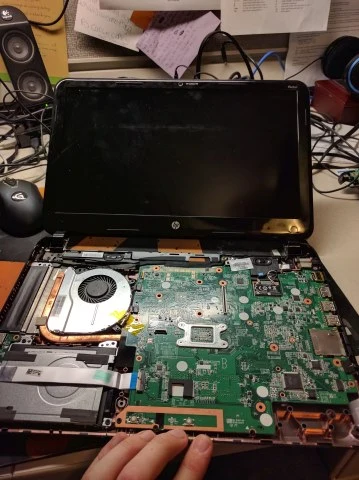

PC Build and Electronics Repair
Small Form Factor PC Build
Build components. These components had to be specially selected to fit inside of the Dan Case A4 7.2L chassis without generating too much heat.
The chassis. This is a Dan Case A4 sandwich-style chassis. At the time it was one of if not the smallest case in which you could still put a full powered desktop processor and 2 slot graphics card. Banana for scale.
This machine was built right when the AMD 3700X had been released, and the B450 ASRock ITX board being used needed a bios update to support the new processor. An old AM4 socket processor was borrowed to perform the update.
The cables which came with the modular Corsair power supply would not fit with the all-in-one liquid cooling being used for this build, which means manufacturing new ones. You can see in this picture that there's no way the side panel will fit with the stock heatsink.
ATX power supply pinout diagram. Each cable was measured to fit, cut, crimped, shrink-wrapped, and tested with a digital multimeter with the power supply running to test for correct voltages.
Ends before being inserted into the fitting.
Cable run from PSU to the motherboard's 24 pin ATX power supply.
Cables with the stock heatsink.
Cables with the Asetek 645LT heatsink, the only all-in-one heatsink at the time of manufacture to fit in this tiny case and dissipate enough heat for the 8 core 16 thread 3700X CPU.

This image shows the narrow tolerances for this case. This NVidia 2070 Super graphics card was chosen due to a combination of cost to performance, I/O (this is one of the few graphics cards with a USB-C port for the now defunct virtual link VR interface), physical dimensions, and acceptable heat output.
The finished product at Alex's home workstation.
Examples of Electronics Repair
Upgrading the power supply on an old desktop to give to a local student.
Connecting the chassis RGB to the new power supply.
Connecting the chassis RGB to the new power supply.
Replacing the screen on a Surface Pro 4, which earned a 2/10 on iFixit for repairability.
Installing XFCE Ubuntu on a 2012 Chromebook required flashing the BIOS and flipping a write-protection switch on the motherboard.
Running CAT 5e cabling through my house.